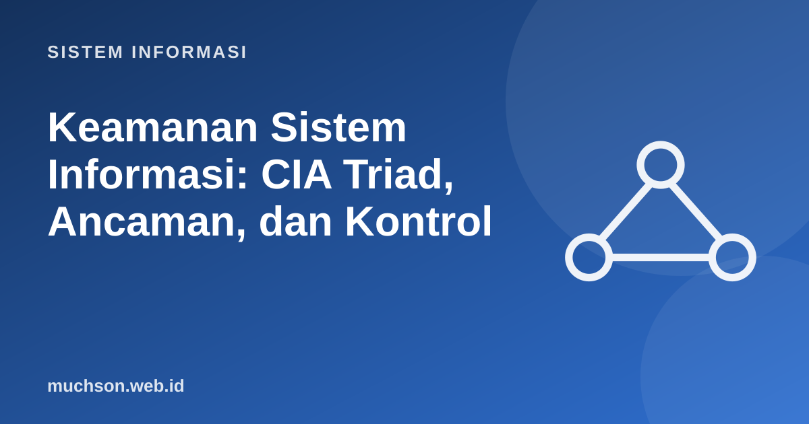

Beranda › Artikel › Sistem Informasi
Sistem InformasiKeamanan Sistem Informasi: CIA Triad, Ancaman, dan Kontrol
Keamanan bukan produk yang dipasang di akhir, melainkan sifat yang dirancang sejak awal. Materi ini memberi kerangka berpikir (CIA triad, ancaman, kerentanan, kontrol) lalu memperagakan dua kelemahan paling klasik, SQL injection dan penyimpanan kata sandi, dengan kode yang dijalankan.
Sebaiknya sudah paham: konsep SI, arsitektur SI

Setelah membaca dan mencoba materi ini, Anda mampu:
- menjelaskan kerahasiaan, integritas, dan ketersediaan (CIA)
- membedakan aset, ancaman, kerentanan, risiko, dan kontrol
- memperagakan SQL injection dan pencegahannya dengan kueri berparameter
- menjelaskan penyimpanan kata sandi yang aman (hash + salt)
- menerapkan least privilege, pertahanan berlapis, dan autentikasi multifaktor
CIA triad
Istilah yang sering tertukar
| Istilah | Arti | Contoh |
|---|---|---|
| Aset | Sesuatu yang berharga | Basis data pelanggan |
| Ancaman | Penyebab potensial kerugian | Penyerang, malware, bencana, kesalahan manusia |
| Kerentanan | Kelemahan yang dapat dimanfaatkan | Perangkat lunak belum di-patch, kata sandi lemah |
| Risiko | Kemungkinan × dampak ancaman memanfaatkan kerentanan | Peluang kebocoran data dikali kerugiannya |
| Kontrol | Tindakan mengurangi risiko | Firewall, pelatihan, MFA, cadangan |
Demo 1: SQL injection
SQL injection terjadi ketika masukan pengguna disambung langsung ke kueri sehingga dapat mengubah makna kueri. Kelemahan ini konsisten berada dalam daftar risiko teratas OWASP selama bertahun-tahun.
import sqlite3
db = sqlite3.connect(":memory:")
db.executescript("""
CREATE TABLE pengguna (nama TEXT, sandi TEXT, peran TEXT);
INSERT INTO pengguna VALUES ('ani','rahasia123','mahasiswa'),('admin','sangat-rahasia','admin');
""")
def login_rentan(nama, sandi):
sql = f"SELECT nama, peran FROM pengguna WHERE nama = '{nama}' AND sandi = '{sandi}'" # menyambung string: BERBAHAYA
return db.execute(sql).fetchall()
def login_aman(nama, sandi):
return db.execute("SELECT nama, peran FROM pengguna WHERE nama = ? AND sandi = ?", (nama, sandi)).fetchall() # kueri berparameter
print("normal :", login_rentan("ani", "rahasia123"))
print("salah sandi :", login_rentan("ani", "salah"))
serangan = "' OR '1'='1"
print("injection :", login_rentan("admin", serangan)) # masuk sebagai admin TANPA sandi
print("aman, diserang :", login_aman("admin", serangan))
print("aman, sah :", login_aman("ani", "rahasia123"))normal : [('ani', 'mahasiswa')]
salah sandi : []
injection : [('ani', 'mahasiswa'), ('admin', 'admin')]
aman, diserang : []
aman, sah : [('ani', 'mahasiswa')]
Pencegahan utama: kueri berparameter (prepared statement), validasi dan pembersihan masukan sebagai lapisan tambahan, akun basis data dengan hak minimum, dan pesan kesalahan yang tidak membocorkan struktur basis data.
Demo 2: menyimpan kata sandi
import hashlib, hmac, os
def hash_tanpa_garam(sandi):
return hashlib.sha256(sandi.encode()).hexdigest()
# dua pengguna dengan sandi sama menghasilkan hash sama -> mudah ditebak bila bocor
print("tanpa garam:", hash_tanpa_garam("password1")[:16], hash_tanpa_garam("password1")[:16])
def buat_hash(sandi):
garam = os.urandom(16) # acak per pengguna
h = hashlib.pbkdf2_hmac("sha256", sandi.encode(), garam, 200_000) # lambat disengaja
return garam.hex() + ":" + h.hex()
def cocok(sandi, tersimpan):
garam_hex, h_hex = tersimpan.split(":")
h = hashlib.pbkdf2_hmac("sha256", sandi.encode(), bytes.fromhex(garam_hex), 200_000)
return hmac.compare_digest(h.hex(), h_hex) # perbandingan waktu-tetap
a, b = buat_hash("password1"), buat_hash("password1")
print("dengan garam: dua hash sama?", a == b)
print("verifikasi benar:", cocok("password1", a), " salah:", cocok("salah", a))tanpa garam: 0b14d501a594442a 0b14d501a594442a
dengan garam: dua hash sama? False
verifikasi benar: True salah: False
Kontrol berlapis
| Prinsip | Penjelasan |
|---|---|
| Least privilege | Beri hak akses sekecil mungkin yang diperlukan untuk tugas |
| Pemisahan tugas | Orang yang membuat transaksi berbeda dari yang menyetujuinya |
| Autentikasi multifaktor (MFA) | Sesuatu yang diketahui (sandi) + dimiliki (ponsel/kunci) + adalah (biometrik) |
| Gagal aman | Saat error, sistem menolak akses, bukan membukanya |
| Jangan percaya masukan | Semua data dari luar harus divalidasi |
Ancaman umum
- Phishing dan rekayasa sosial: menipu manusia, vektor serangan paling sering berhasil.
- Malware dan ransomware: kode jahat; cadangan terpisah (offline) adalah pertahanan terpenting.
- XSS (cross-site scripting): skrip jahat disisipkan ke halaman yang dilihat pengguna lain; cegah dengan meloloskan (escape) keluaran.
- DDoS: membanjiri layanan sehingga tidak tersedia.
- Ancaman orang dalam: akses sah yang disalahgunakan atau kecerobohan.
- Rantai pasok: kerentanan pada pustaka atau penyedia yang Anda pakai.
1. Identifikasi aset, ancaman, kerentanan, dan kontrol: "Laptop dosen berisi data nilai dicuri karena tidak dienkripsi."
2. Mengapa MFA mengurangi dampak kebocoran kata sandi?
3. Beri contoh penerapan least privilege di sistem akademik.
4. Apa bedanya enkripsi dan hashing?
- CIA: kerahasiaan, integritas, ketersediaan.
- Risiko = ancaman memanfaatkan kerentanan pada aset; kontrol menguranginya.
- SQL injection dicegah dengan kueri berparameter; kata sandi disimpan dengan hash lambat bergaram.
- Pertahanan berlapis, least privilege, dan MFA adalah prinsip dasar.
Tanya jawab
Apa itu zero trust?
Apakah antivirus cukup?
Dari mana belajar lebih lanjut?
Referensi
- OWASP Top 10
- NIST Cybersecurity Framework
- Dokumentasi Python: hashlib (pbkdf2_hmac)
- OWASP Password Storage Cheat Sheet